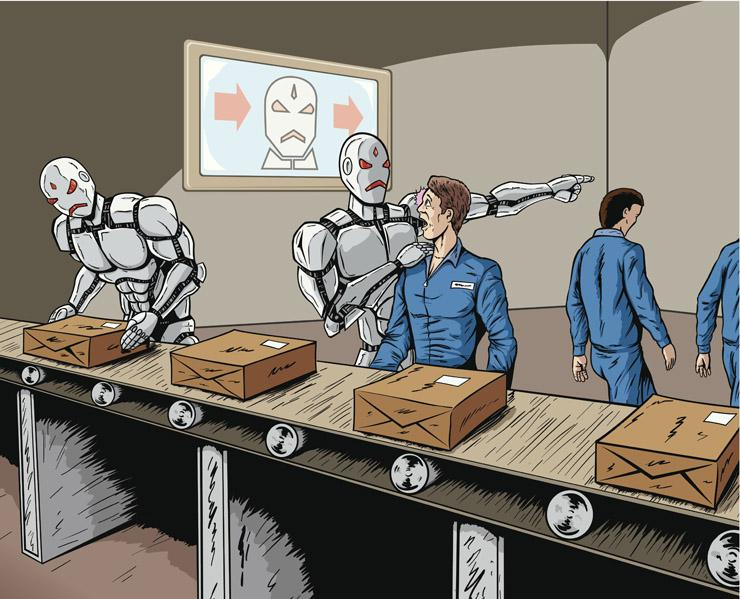

1) Job Displacement and Automation:
While AI will create new jobs, it will possibly replace workers in lower-skill industries such as manufacturing, retail, and transport.
2) Economic Inequality:
Presence of AI might increase income inequality, as high-skill workers will benefit but low-skill workers will face unemployment.
Jobs Most at Risk vs. Jobs Less Likely to be Replaced by AI:
| Jobs Most at Risk | Jobs Less Likely to be Replaced |
|---|---|
| Truck Driver | Healthcare Worker |
| Cashier | Teacher |
| Traditional Worker | Creative Professional |
